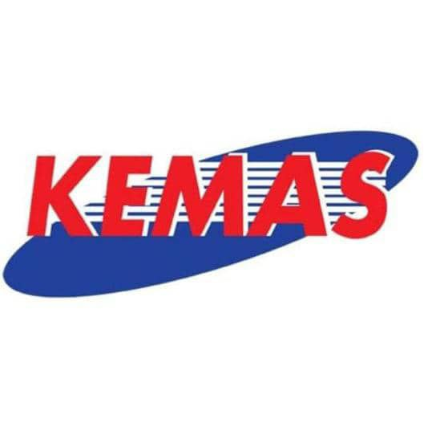
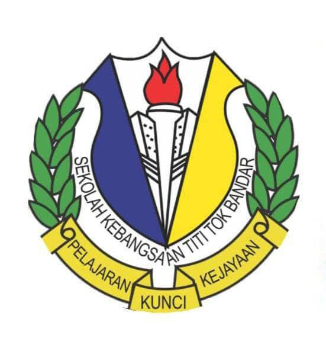
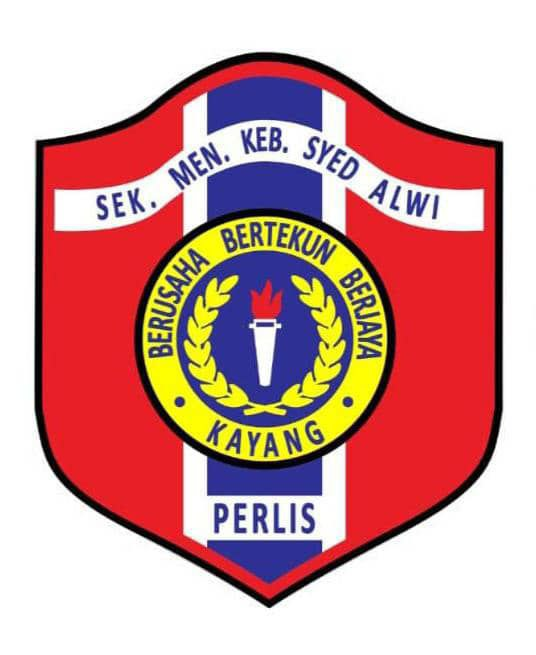

KINDERGARTEN:
Geraduan Kecil Bukit Mertajam (2-3 years old)
Tabika Kemas Titi Tok Bandar (4-5 years old)
Pra Sekolah Titi Tok Bandar (6 years old)

PRIMARY SCHOOL:
SK Titi Tok Bandar (Year 1- Year 6)
SECONDARY SCHOOL:
SMK(A) Alawiyah Kangar (Form 1-3)
SMK Perlis (Form 4-5)

FORM SIX:
SMK Syed Alwi Kangar (Form 6)
UNIVERSITY:
UiTM Merbok
Bachelor of Information Science Library Management